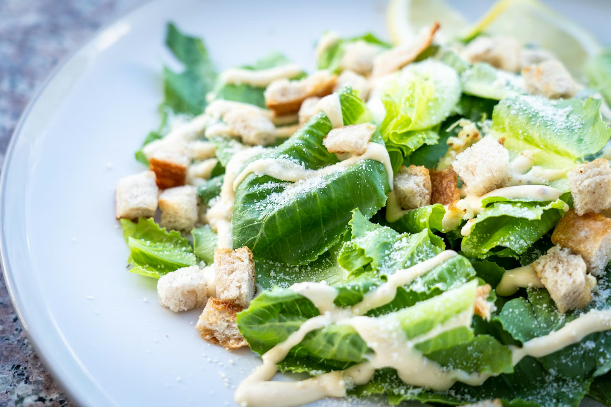

Caesar Salad
Description
Crisp, chilled romaine lettuce is generously tossed in a classic Caesar dressing, delivering bold, savory flavor with notes of garlic, lemon, and Parmesan. Finished with crunchy golden croutons and a snowfall of freshly grated Parmesan cheese, this timeless salad strikes the perfect balance between freshness and indulgence. Simple, satisfying, and endlessly craveable.
Ingredients
Salad
- 1 large head romaine lettuce
- ½ cup croutons
- ¼ cup Parmesan cheese
Caesar Dressing
- 1-2 cloves garlic, minced
- 2 anchovy fillets, finely minced (optional but traditional)
- 1 egg yolk (or 2 tablespoon mayonnaise as a substitute)
- 1 tablespoon Dijon mustard
- 1 tablespoon lemon juice (freshly squeezed)
- ½ cup olive oil
- Salt, to taste
- Black pepper, to taste
Steps
- Wash, dry, and chop the romaine lettuce into bit-sized pieces. Set aside.
- In a bowl, whisk together garlic, anchovies (if using), egg yolk (or mayonnaise), Dijon mustard, and lemon juice.
- Slowly drizzle in the olive oil while whisking continuously until the dressing thickens.
- Add salt and black pepper to taste.
- In a large bowl, toss the lettuce with the dressing until evenly coated.
- Add croutons and Parmesan cheese. Toss lightly and serve immediately.